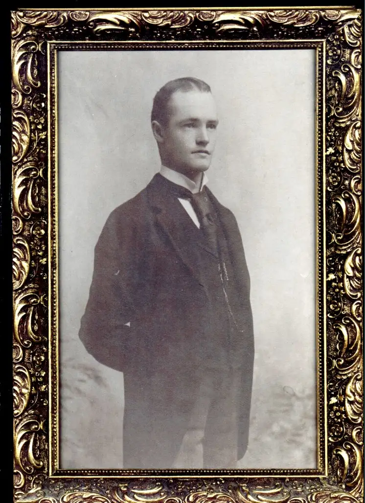
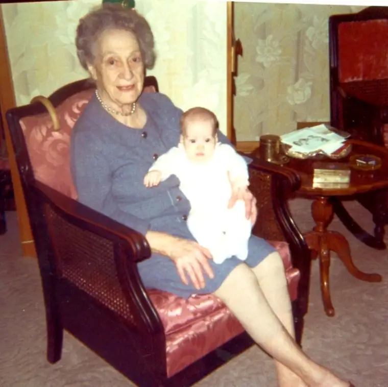
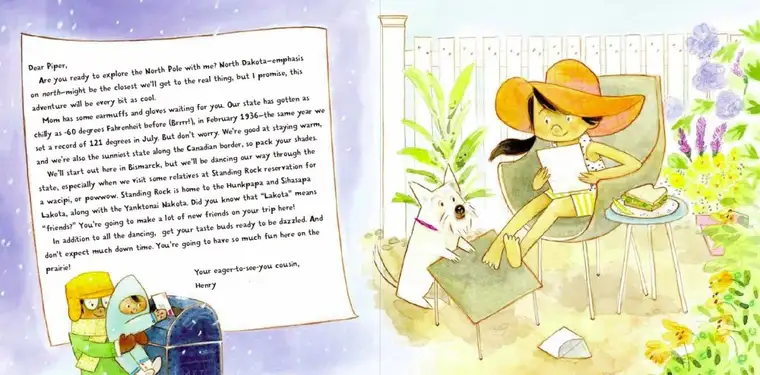
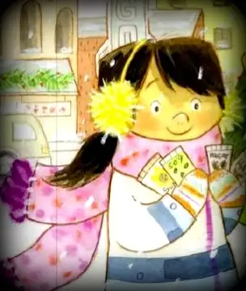
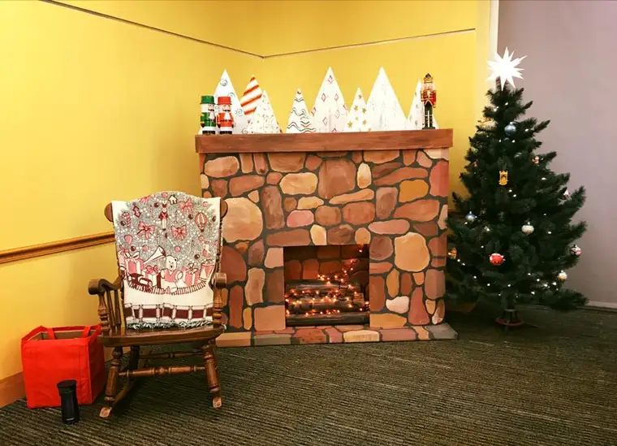
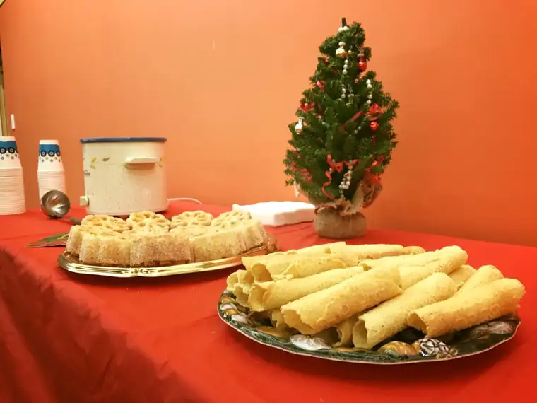

This fall, I was blessed with an early Christmas gift, when my latest children’s book, “The Twelve Days of Christmas in North Dakota,” was released.

As any author knows, a book doesn’t happen overnight. The gift was set in motion in 2015, when Sterling Publishing approached me to see if I’d be interested in auditioning to author a book in their popular “Twelve Days of Christmas” series covering all the states. I assume they’d reviewed my earlier state alphabet book, “P is for Peace Garden: A North Dakota Alphabet,” and found it worthy of giving me a shot.
After creating a fun “letter” to offer them a sample of what I might do for them, I was awarded the contract. Because it had been a decade since my first two children’s books were published, this felt like a divine blessing — something unexpected, but very appreciated. Not only do I love writing for children, but I’d really enjoyed writing about North Dakota, a place where my family’s heritage goes very deep.
A short divergence: My maternal great-great grandfather, Joe Dietrich, was one of the first European settlers in Bismarck. One of his jobs was to provide wood to the steamboats that traveled along the Missouri River. As I understand it, he also ran a stagecoach business. He married an Irish lassie who’d stepped onto a train in the East and declared she would travel “until the rails end.” The year of her arrival, the railway had gone bankrupt so the tracks stopped in Bismarck. She soon met my great-great grandfather, and they had three children, including my great-grandmother Roxie Belle (“Dolly”), who later married Irish orphan immigrant Patrick E. Byrne. Further on down the line, in 1968, I came into the picture.


So, though most of my childhood took place in Eastern Montana on the Fort Peck Reservation, where my parents were teachers, North Dakota has always been a second home to me, and for the past 20 years, home to my family. Four of our five children were born here, and I truly love this humble and fruitful state.
It was pure joy writing “The Twelve Days of Christmas in North Dakota,” from the researching of our state’s many treasures, to coming up with names for the main characters who would travel through North Dakota during the “visiting cousin’s” Christmastime stay.
In naming our characters and creating a story never before told, we experience in a sense, as co-creators, God’s delight at his own creations, just as when our own children come into the world. I have an inkling how God felt as he first surveyed the world and his precious people. Coming up with names and personalities for Henry, Piper, and their feathery friend, Marty the Meadowlark was truly invigorating — a feeling everyone who has created anything understands.
But most of the details of just how that unfolded, I’ve kept in a little space within my heart. Until recently, nobody knew how I chose the name “Piper” for the curious girl character who visits North Dakota, and writes home to her family in another, warmer, unspecified part of the country, telling them of her adventures.

Nobody but I knew that this character was inspired by a stranger I’d met years ago while donating plasma. I didn’t cross Piper’s path for too long. She was one of many medical technicians who drew my plasma during that time. But I recall being struck by her. She was young, beautiful and spunky, and, I decided, had the coolest name. I wanted my character to be spunky. The name Piper popped into mind, and thus, Piper was “born” into my story.

And I honestly thought that would be the end of it.
Flash forward to this past Dec. 12, only a day after my husband returned home from the hospital from a very daunting open-heart surgery. I was scheduled to do an author visit at our public library, an event set long before we knew of his heart issues. Though glad for the opportunity, the timing felt off, and emotionally, I was in a tough place. I shared this with my sister, who promised me that God would bless me in some way that evening, and all would be well. So, I kept that promise near as I made my way out into the chilly night.
As the children gathered at the base of the rocking chair near the library’s “fireplace” to hear the story of Piper, Henry and Marty, I naturally chatted a bit with them.

I asked one her name. Shyly, she told me not only her first name but her middle name as well. “Piper.” “Piper?” I asked, wanting to make sure I’d heard right. Her grandmother, sitting nearby, shared that her middle name had come from her Aunt Piper. Stunned, I could feel the wheels turning in my head, so I dared to ask the grandmother if her daughter Piper had ever worked for our local plasma-donation organization. “Yep,” she said. I noted more intently her facial features, and knew I was in fact face to face with the mother of the “original Piper,” who’d inspired my character, and her niece, who smiled to discover she was a small part of the book she’d come to discover.
Now, I realize that North Dakota is a small state next to many, and to some it might seem like this sort of encounter might not be too unusual. In fact, Fargo happens to be the largest city in North Dakota, and from my perspective, the chances of this family coming to my reading and talk, and my question that led to this “divine discovery,” seemed slim. A feeling of joy overtook me, and after chatting with the family more later, there was no doubt. The real Piper had found her way back into my life, despite the odds.
On the way home, reflecting on my sister’s promise, I knew that God had blessed me through the meek voice of a sweet child during a difficult time. All I’d needed to unwrap the gift was the reminder to remain expectant and watch for the moment he would drop into my world with a smile. Meeting “Little Piper” was the smile I’d been needing, the consolation of God’s goodness beyond our imagination. I felt humbled, and grateful.

As if that wasn’t enough, when I shared this story with a friend who now lives out of state, she recognized “Little Piper” and mentioned how her sister’s family grew up across the street from the “real” Piper and family, and that they’d shared many happy times together. To realize the “real” Piper has a connection to a real and dear friend of mine has made this story even more meaningful.
Though this story is very personal, I see a wider purpose in sharing it. We are now in the midst of a season of expectation, of watching and waiting for God to reveal his love for us. Even in times of darkness — especially then, perhaps — we need to be reminded that he has not left us. Not even close. He is ever near and wants nothing more than to bring us sweet surprises to make our day, and even more, our life. And beyond our expectation, he will deliver.
Q4U: When did an intricate surprise, which felt truly divine, manifest in your life?